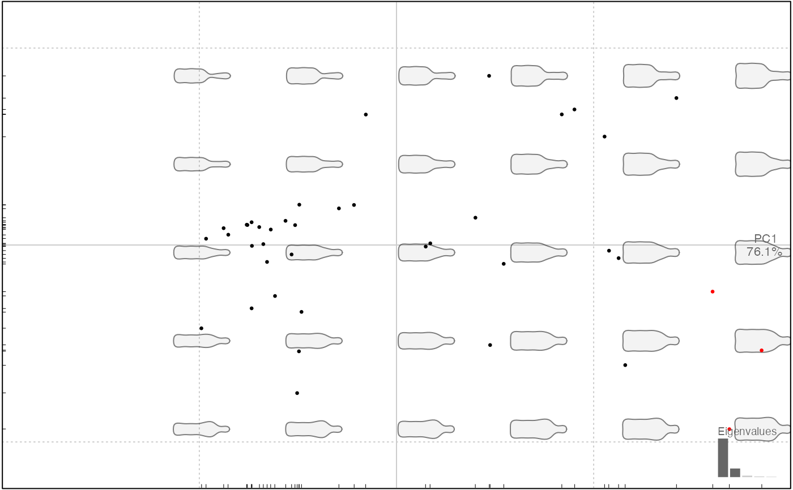

A simple wrapper around dnorm that helps identify outliers. In particular, it may be useful on Coe object (in this case a PCA is first calculated) and also on Ldk for detecting possible outliers on freshly digitized/imported datasets.
which_out(x, conf, nax, ...)
| x | object, either Coe or a numeric on which to search for outliers |
|---|---|
| conf | confidence for dnorm (1e-3 by default) |
| nax | number of axes to retain (only for Coe), if <1 retain enough axes to retain this proportion of the variance |
| ... | additional parameters to be passed to PCA (only for Coe) |
experimental. dnorm parameters used are median(x), sd(x)
#> [1] 4#>#> [1] 1 6# on Ldk w_no <- w_ok <- wings w_no$coo[[2]][1, 1] <- 2 w_no$coo[[6]][2, 2] <- 2 which_out(w_ok, conf=1e-12) # with low conf, no outliers#> [1] NAwhich_out(w_no, conf=1e-12) # as expected#>#> # A tibble: 2 x 4 #> shape id row coordinate #> <chr> <int> <int> <chr> #> 1 AN2 2 1 x #> 2 AN6 6 2 y# a way to illustrate, filter outliers # conf has been chosen deliberately low to show some outliers x_f <- bot %>% efourier#>#>#> duvel latrappe ballantines #> 6 13 22cols <- rep("black", nrow(x_p$x)) outliers <- which_out(x_p$x[, 1], 0.5) cols[outliers] <- "red" plot(x_p, col=cols)#>#> Error in eval(e, Coe$fac, parent.frame()): object 'outliers' not found# or directly with which_out.Coe # which relies on a PCA outliers <- x_f %>% which_out(0.5, nax=0.95) %>% na.omit() x_f %>% slice(-outliers) %>% PCA %>% plot#> Error in eval(e, Coe$fac, parent.frame()): object 'outliers' not found